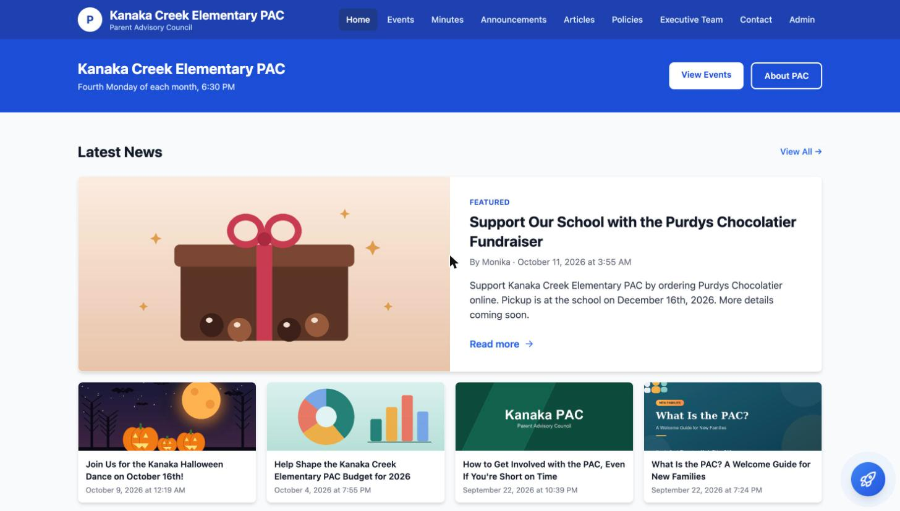
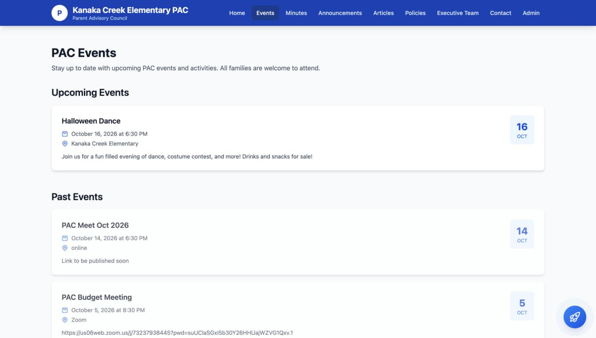
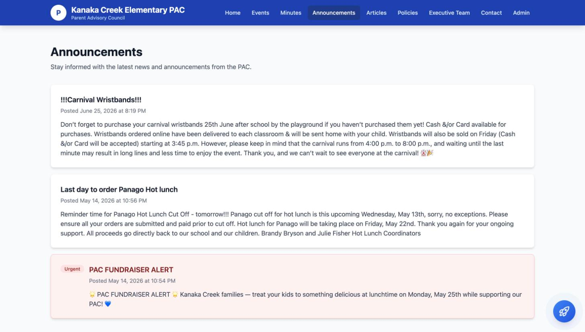
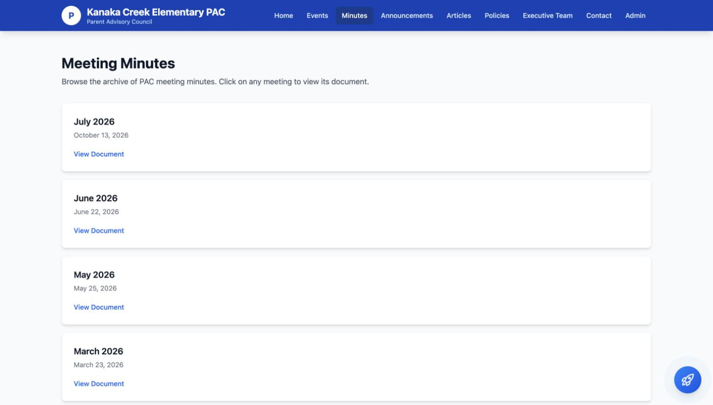

What your PAC gets
- Your own site at yourschool.pacsolution.ca, with your school name, logo and colour.
- Events with date, time, location and parent RSVPs, split into upcoming and past.
- Meeting minutes archived by meeting date — PDFs open right in the page, no download needed.
- Announcements for time-sensitive notices, flagged urgent and auto-expiring.
- Articles — longer pieces with cover images, saved as drafts until you publish.
- Policies, executive team and a contact form that reaches your PAC, not anyone else's.
- Email updates sent to parents who subscribe, from your PAC's name and reply-to address.
Why it keeps working after the first month
- Several people can post. Your whole executive can have access, so the site does not stall when one person is busy.
- No passwords to share or lose. Members sign in by clicking a link emailed to them.
- Roles that match your council. Owners manage who has access; editors post content.
- Handover is one click. When the exec changes, the new chair is added and the old one removed — nothing is locked in a personal account.
- Parents need no account. Nothing to join, nothing to install, everything public and searchable.
- Nothing to maintain. No hosting, plugins, updates or webmaster on your side.
Your school's content stays your school's
Separate by designEach school's site is walled off from every other one. Your editors only ever see your content, and parents only ever see yours.
Yours to takeAsk any time and your whole site — content, documents, subscriber list — is exported for you in full.
Nothing disappearsIf your PAC pauses, the site is set aside, not deleted. Your history stays intact.
Coming next — included as it ships
Online paymentsHot lunch, spirit wear and event tickets paid online, instead of cash in envelopes and a spreadsheet to reconcile.
Donation buttonCollect for fundraisers and special projects straight from your site.
Volunteer sign-ups & surveysFill shifts and ask parents what they think, without another sign-up sheet or outside tool.
No extra charge for new features — your PAC gets them as they are released. Payment and donation features are the one exception: the card processor charges its own fee per transaction, which is theirs, not ours.
Getting started takes one email
Tell us three thingsYour school name, the web address you want, and the email of the first person who should manage it.
Your site goes liveSet up the same day with your branding and contact details, ready for content.
Your exec takes overAdd the rest of your council, post your first minutes and events, and send parents the link.